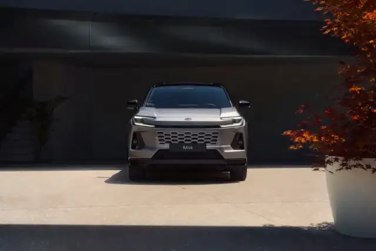

Elektrisch naar je werk. Ruimte voor wat daarna komt.
Een plug-inhybride kan beide combineren, als opladen bij jouw week hoort.
Stil vertrekken naar het werk en op een langere rit ook benzine kunnen gebruiken: dat maakt een plug-inhybride aantrekkelijk. Het voordeel wordt concreet wanneer je batterij niet alleen groter is, maar ook regelmatig wordt opgeladen.

Plug-inhybride: het korte antwoord
Een plug-inhybride (PHEV) heeft een verbrandingsmotor en een batterij die je extern kunt opladen. Met voldoende lading kan hij een deel van je ritten elektrisch afleggen. Als de elektrische rijvoorraad is opgebruikt, kan de wagen verder als hybride. Regelmatig laden en een passend ritprofiel zijn bepalend.
Bronnen: Toyota België: plug-inhybridetechnologiePast opladen in jouw week?
Niet de grootste batterij, maar je werkelijke laadgewoonte bepaalt wat je ermee doet.
Oriëntatie, geen modeladvies. Je budget, exacte uitvoering en overige gebruikseisen blijven meewegen.
Denk in een week, niet in een brochuregetal.
Je rijdt misschien vijf dagen dezelfde afstand en in het weekend veel verder. Dat is iets anders dan elke dag honderden kilometers zonder vaste parkeerplek. Noteer wanneer je werkelijk kunt laden, thuis of op het werk, en of je daar voldoende tijd voor hebt.
Gebruik voor de vergelijking het rijbereik van de exacte uitvoering. Kou, snelheid, verwarming en rijstijl beïnvloeden het resultaat. Zelfs met een geladen batterij kan de benzinemotor onder bepaalde omstandigheden inschakelen. Een geadverteerd elektrisch bereik is geen garantie voor elke rit.
Wanneer een PHEV het onderzoeken waard is.
- Je hebt regelmatig een bruikbare laadplek.
- Een betekenisvol deel van je gebruik kan met geladen batterij plaatsvinden.
- Je wilt op andere ritten ook de benzinemotor kunnen gebruiken.
- De meerprijs, ruimte en totale gebruikskosten passen binnen je budget.
Als je zelden kunt of wilt laden, vergelijk dan expliciet met een full hybrid en een EV met haalbaar laadplan. De extra batterij alleen maakt een PHEV niet automatisch zuiniger of goedkoper.
Het lage benzinecijfer vertelt niet het hele verhaal.
Het gewogen officiële PHEV-verbruik combineert verschillende gebruikssituaties. Behandel dat cijfer niet als wat je altijd verbruikt wanneer je niet oplaadt. Vraag ook naar het verbruik met een ontladen tractiebatterij en tel de gekochte elektriciteit mee.
Europese praktijkmetingen laten zien waarom het laadgedrag ertoe doet. Het historische vlootgemiddelde is geen voorspelling voor jouw Toyota. Het is wel een reden om je eigen aannames zichtbaar te maken. Vergelijk energie met én zonder elektrische kilometers.
Bronnen: Europese Commissie: werkelijk verbruikTest meer dan de acceleratie.
Laat tijdens de proefrit het omschakelen tussen aandrijvingen ervaren. Probeer de kabel en laadpoort, bekijk het laadvermogen van de uitvoering en controleer of de bagageruimte jouw spullen aankan. Moet je een aanhanger trekken? Vraag naar de toegestane massa van precies die variant.
Niet elke PHEV kan DC-snelladen. Ook binnen een modelnaam kunnen generaties verschillen. De Belgische RAV4-pagina beschrijft hybride en plug-inhybride uitvoeringen; dat maakt de RAV4 geen volledig elektrische wagen. Vraag steeds de actuele technische fiche. [S07]
Wat je nog wilt weten.
Kan een PHEV rijden zonder dat ik hem oplaad?
Ja, zolang er voldoende brandstof is en de wagen normaal functioneert. Maar je benut dan niet dezelfde externe elektrische energie. Vergelijk het werkelijke verbruik en de meerprijs met andere aandrijvingen.
Is een PHEV voordelig als ik alleen publiek kan laden?
Dat hangt af van tarief, beschikbaarheid, parkeerkosten en hoe vaak je er werkelijk laadt. Een dure of onhandige laadplek kan een aantrekkelijke berekening veranderen.
Hoe lang duurt opladen?
Dat hangt af van de hoeveelheid bij te laden energie, het laadvermogen van wagen en laadpunt, de temperatuur en laadverliezen. Controleer de AC- en eventuele DC-mogelijkheden van de exacte uitvoering.
Is een plug-inhybride fiscaal hetzelfde als een full hybrid?
Nee, die begrippen zijn niet uitwisselbaar. Voor zakelijk gebruik tellen daarnaast belastingstelsel, datum en voertuiggegevens mee. Bekijk de zakelijke pagina vóór je conclusies trekt.
Neem je week mee. Voel het verschil achter het stuur.
Een PHEV moet niet alleen prettig rijden. Ook het opladen moet kloppen. Bereid je proefrit voor met de ritten en laadmomenten die je echt verwacht.
Kom thuis bij een garage waar iedereen je kent.
Bij De Bruyn in Machelen begint een goed gesprek bij wat jij nodig hebt, niet bij een afkorting.
Bekijk de officiële contactpaginaExterne website. Deze proefpagina verstuurt zelf geen contact- of proefritaanvraag.
Verder met jouw keuze.
Bronnen en actualiteit
Inhoud gecontroleerd op 5 november 2026. Regelgeving, modellen en voorwaarden kunnen wijzigen. Dit is een redactioneel concept ter beoordeling door Toyota De Bruyn, geen definitief aanbod of individueel fiscaal/juridisch advies.
- Toyota België: plug-inhybridetechnologie
Werking van een plug-inhybride. Controleer prestaties per model en uitvoering.
- Toyota België: opladen
Laadmogelijkheden en praktische uitleg van Toyota België.
- Toyota België: RAV4
Belgische modelpagina. Controleer aandrijving en gegevens voor het juiste modeljaar.
- Europese Commissie: werkelijk verbruik
Europese praktijkmeting, gepubliceerd in 2024 over registraties uit 2021; geen voorspelling voor jouw wagen.
- Toyota België: waar en hoe opladen
Laden en aandachtspunten voor een geschikte elektrische installatie.